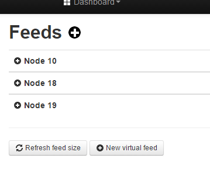

Some nice additions added to the master branch over the past few days, amongst them are that all inputs & feeds are collapsed into their respective node/tag groups, unless expanded by clicking the +.
Just a thought, would it be feasible Chaveiro to expand ALL or collapse ALL, something similar to this (note the + next to Feeds).
Is this something that users would find useful?

Paul
Re: v9.3 - 2016.01.18 Collapsing input/feed tables
Just a thought, would it be feasible to expand ALL or collapse ALL
Or have them "remember" their last state.
Re: v9.3 - 2016.01.18 Collapsing input/feed tables
Or have them "remember" their last state.
I suggested expand/collapse all, to enable users to expand all, to quickly scan all feeds for problems/dead feeds/abnormalities.
Also, if several tag groups were expanded and some collapsed, users could quickly collapse all, to unclutter the workspace, before perhaps expanding just one tag to look at.
Paul
Re: v9.3 - 2016.01.18 Collapsing input/feed tables
If you double tap any of the groups it collapses/uncollapses all.
Paul
Re: v9.3 - 2016.01.18 Collapsing input/feed tables
Double clicking doesn't 'collapse/expand all' on mobile devices Paul, tried it on phone & 2 tablets, but yes, just fired up the laptop and it does work ok with a touchpad.
Also... the + icon link is quite small, and when trying to expand the tags on a tablet earlier, my fat fingers had a little trouble selecting the link icon to expand the tag.
Could the tag/node name be included within the hotspot, to make it easier to select?
Paul
Re: v9.3 - 2016.01.18 Collapsing input/feed tables
I agree the "hotspot" could be extended. It seems to work perfectly on my touch-screen laptop, but now I've tried my smartphone (Samsung S5 neo) it's a bit intermittent and erratic, I think my digits are too big for the smaller display too.
Paul
PS - The button is a good idea, I'm not opposed to the button, just highlighting the functionality is already there.
Re: v9.3 - 2016.01.18 Collapsing input/feed tables
Take a look at last merge and see if it fixes this.
https://github.com/emoncms/emoncms/pull/462
Re: v9.3 - 2016.01.18 Collapsing input/feed tables
'Expanding/collapse all' unfortunately still does not work for most mobile devices I've tried.
On my Android phone, double clicking expands all, but does not collapse all.
On a Android tablet, double clicking has just the same effect as a single click
On a ipad, double clicking has no effect (other than zooming in & out of the screen)
I've tried clearing the browser cache.
Paul
Re: v9.3 - 2016.01.18 Collapsing input/feed tables
Ok, now should be ok...
Re: v9.3 - 2016.01.18 Collapsing input/feed tables
Sorry, still the same - (cleared browser cache's again)
Paul
Re: v9.3 - 2016.01.18 Collapsing input/feed tables
By now i mean with this change: https://github.com/emoncms/emoncms/pull/464/files
On my android double click works now.
Can you test with other devices?
Re: v9.3 - 2016.01.18 Collapsing input/feed tables
I'm using that update.
To show you what the problem is, I've uploaded a quick video (now deleted) showing the results on a ipad.
Paul
Re: v9.3 - 2016.01.18 Collapsing input/feed tables
I tried the update this morning and thought it was much, much better, but not quite perfect, especially with the double tap to close all.
Just tried this latest update on my android phone and it does seem to work very well, even the close all seems good.
But if you do miss the button, and it's not difficult on that size screen, it does cause some annoying "zoom" activity. It is quiet noticeable on a phone screen but can also be detected in a larger screen, if you watch the top menu bar as you double tap an input, you can see the menus span out or contract depending on whether the groups are collapsed or not.
Fantastic work though, it is now useable (and very useful) on a smartphone whereas before it was too tricky to control. I don't have my tablet handy, but the phone is pretty much there, and my windows touchscreen 2 in 1 laptop/tablet is very good.
Paul
Re: v9.3 - 2016.01.18 Collapsing input/feed tables
...By now i mean with this change: https://github.com/emoncms/emoncms/pull/464/files
That's strange... I git pulled what I thought was the #464 commit last night just after 9.20pm (the update was committed by Chaveiro at 9.16pm), and of course the collapsing table issue was still present.
I've just git pulled the changes made by T & G late last night, and checking the log it has also now added the #464 commit.
That has made a tremendous difference, and works brilliantly on all of my devices now. It's much easier to select the nodes - even on a phone, and collapsing/expanding the tables is equally easy to do. The whole experience is much smoother and more polished.
Great work Chaveiro.
Paul